용접기능사 (2013-01-27 기출문제)
1과목: 용접일반
1. 가스 용접시 안전 사항으로 적당하지 않은 것은?
- 산소병은 60℃ 이하 온도에서 보관하고, 직사광선을 피하여 보관한다.
- 호스는 길지 않게 하며, 용접이 끝났을 때는 용기 밸브를 잠근다.
- 작업자 눈을 보호하기 위해 적당한 차광유리를 사용한다.
- 호스 접속구는 호스 밴드로 조이고 비눗물 등으로 누설 여부를 검사한다.
(정답률: 82%)

2. 맞대기 용접이음에서 모재의 인장강도는 450Mpa이며, 용접 시험편의 인장강도가 470Mpa일 때 이음효율은 약 몇%인가?
- 104
- 96
- 60
- 69
(정답률: 65%)
3. 서브머지드 아크 용접의 용융형 용제에서 입도에 대한 설명으로 틀린 것은?
- 용제의 입도는 발생 가스의 방출상태에는 영향을 미치나, 용제의 용융성과 비드형상에는 영향을 미치지 않는다.
- 가는 입자일수록 높은 전류를 사용해야 한다.
- 거친 입자의 용제에 높은 전류를 사용하면 비드가 거칠어 기공, 언더컷 등이 발생한다.
- 가는 입자의 용제를 사용하면 비드 폭이 넓어지고, 용입이 얕아진다.
(정답률: 50%)
4. 플라스마 아크 용접에 관한 설명 중 틀린 것은?
- 전류 밀도가 크고 용접속도가 빠르다.
- 기계적 성질이 좋으며 변형이 적다.
- 설비비가 적게 든다.
- 1층으로 용접할 수 있으므로 능률적이다.
(정답률: 82%)
5. 서브머지드 아크 용접의 용제 중 흡습성이 높아 보통 사용 전에 150~300℃에서 1시간 정도 재건조해서 사용하는 것은?
- 용제형
- 혼성형
- 용융형
- 소결형
(정답률: 66%)
6. CO2 가스 아크 용접에서 용제가 들어있는 와이어 CO2 법의 종류에 속하지 않은 것은?
- 솔리드 아크법
- 유니언 아크법
- 퓨즈 아크법
- 아코스 아크법
(정답률: 51%)
7. 가스 절단에 따른 변형을 최소화할 수 있는 방법이 아닌 것은?
- 적당한 지그를 사용하여 절단재의 이동을 구속한다.
- 절단에 의하여 변형되기 쉬운 부분을 최후까지 남겨놓고 냉각하면서 절단한다.
- 여러 개의 토치를 이용하여 평행 절단한다.
- 가스 절단 직후 절단물 전체를 650℃로 가열한 후 즉시 수냉한다.
(정답률: 57%)
8. MIG용접에 사용되는 보호가스로 적합하지 않은 것은?
- 순수 아르곤 가스
- 아르곤-산소 가스
- 아르곤-헬륨 가스
- 아르곤-수소 가스
(정답률: 57%)
9. 아크용접작업에 의한 재해에 해당되지 않은 것은?
- 감전
- 화상
- 전광성 안염
- 전도
(정답률: 79%)
10. 다음 중 응력제거 방법에 있어 노내 풀림법에 대한 설명으로 틀린 것은?
- 일반 구조물 압연강재의 노내 및 국부 풀림의 유지 온도는 725± 50℃이며, 유지시간은 판 두께 25㎜에 대하여 5시간 정도이다.
- 잔류응력의 제거는 어떤 한계 내에서 유지온도가 높을수록 또 유지시간이 길수록 효과가 크다.
- 보통 연강에 대하여 제품을 노내에서 출입시키는 온도는 300℃를 넘어서는 안 된다.
- 응력제거 열처리법 중에서 가장 잘 이용되고 또 효과가 큰 것은 제품 전체를 가열로 안에 넣고 적당한 온도에서 얼마동안 유지한 다음 노내에서 서냉하는 것이다.
(정답률: 59%)
11. 금속 아크 용접시 지켜야 할 유의사항 중 적당하지 않은 것은?
- 작업시 전류는 적절하게 조절하고 정리 정돈을 잘하도록 한다.
- 작업을 시작하기 전에는 메인 스위치를 작동시킨 후에 용접기 스위치를 작동시킨다.
- 작업이 끝나면 항상 메인 스위치를 먼저 끈 후에 용접기 스위치를 꺼야 한다.
- 아크 발생 시에는 항상 안전에 신경을 쓰도록 한다.
(정답률: 88%)
12. 가연물 중에서 착화온도가 가장 낮은 것은?
- 수소(H2)
- 일산화탄소(CO)
- 아세틸렌(C2H2)
- 휘발유(gasoline)
(정답률: 63%)
13. 일반적으로 MIG 용접의 전류 밀도는 아크 용접의 몇 배 정도 되는가?(오류 신고가 접수된 문제입니다. 반드시 정답과 해설을 확인하시기 바랍니다.)
- 2~4배
- 4~6배
- 6~8배
- 8~11배
(정답률: 45%)
14. 미세한 알루미늄 분말과 산화철 분말을 혼합하여 과산화바륨과 알루미늄 등 혼합분말로 된 점화제를 넣고 연소시켜 그 반응열로 용접하는 것은?
- 테르밋 용접
- 전자 빔 용접
- 불활성가스 아크 용접
- 원자 수소 용접
(정답률: 83%)
15. 피복 아크용접에서 용접봉을 선택할 때 고려할 사항이 아닌 것은?
- 모재와 용접부의 기계적 성질
- 모재와 용접부의 물리적, 화학적 성질
- 경제성 고려
- 용접기의 종류와 예열 방법
(정답률: 58%)
16. 용접부의 방사선 검사에서 γ선원으로 사용되지 않는 원소는?
- 이리듐 192
- 코발트 60
- 세슘 134
- 몰리브덴 30
(정답률: 61%)
17. 다음 그림은 탄산가스 아크 용접(CO2 gas arc welding)에서 용접토치의 팁과 모재 부분을 나타낸 것이다. d 부분의 명칭을 올바르게 설명한 것은?
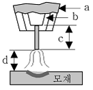
- 팁과 모재간 거리
- 가스 노즐과 팁간 거리
- 와이어 돌출 길이
- 아크 길이
(정답률: 67%)
18. 모재의 홈 가공을 U형으로 했을 경우 앤드 탭(end-tap)은 어떤 조건으로 하는 것이 가장 좋은가?
- I형 홈 가공으로 한다.
- X형 홈 가공으로 한다.
- U형 홈 가공으로 한다.
- 홈 가공이 필요 없다.
(정답률: 76%)
19. 겹치기 저항 용접에 있어서 접합부에 나타나는 용융 응고된 금속 부분은?
- 마크(mark)
- 스포트(spot)
- 포인트(point)
- 너깃(nugget)
(정답률: 72%)
20. 납땜법에 관한 설명으로 틀린 것은?
- 비철 금속의 접합도 가능하다.
- 재료에 수축 현상이 없다.
- 땜납에는 연납과 경납이 없다.
- 모재를 녹여서 용접한다.
(정답률: 62%)
21. 초음파 탐상법에 속하지 않은 것은?
- 펄스 반사법
- 투과법
- 공진법
- 관통법
(정답률: 66%)
22. 용접균열을 방지하기 위한 일반적인 사항으로 맞지 않은 것은?
- 좋은 강재를 사용한다.
- 응력집중을 피한다.
- 용접부에 노치를 만든다.
- 용접 시공을 잘한다.
(정답률: 78%)
23. 용접 입열과 관련된 설명으로 옳은 것은?
- 아크 전류가 커지면 용접 입열은 감소한다.
- 용접 입열이 커지면 모재가 녹지 않아 용접이 되지 않는다.
- 용접 모재에 흡수되는 열량은 입열의 10% 정도이다.
- 용접 속도가 빠르면 용접 입열은 감소한다.
(정답률: 61%)
24. 용접에 사용되는 가연성 가스인 수소의 폭발 범위는?
- 4~5%
- 4~15%
- 4~35%
- 4~75%
(정답률: 57%)
25. 산소병의 내용적이 40.7리터인 용기에 압력이 100kg/cm2로 충전되어 있다면 프랑스식 팁 100번을 사용하여 표준 불꽃으로 약 몇 시간까지 용접이 가능한가?
- 16시간
- 22시간
- 31시간
- 41시간
(정답률: 70%)
26. 가스 절단에서 전후, 좌우 및 직선 절단을 자유롭게 할 수 있는 팁은?
- 이심형
- 동심형
- 곡선형
- 회전형
(정답률: 62%)
27. 피복 아크 용접봉의 피복제에 들어가는 탈산제에 모두 해당되는 것은?
- 페로실리콘, 산화니켈, 소맥분
- 페로티탄, 크롬, 규사
- 페로실리콘, 소맥분, 목재 톱밥
- 알루미늄, 구리, 물유리
(정답률: 60%)
28. 다음 중 고압가스 용기의 색상이 틀린 것은?
- 산소 - 청색
- 수소 - 주황색
- 아르곤 - 회색
- 아세틸렌 - 황색
(정답률: 62%)
29. 주철 용접이 곤란하고 어려운 이유가 아닌 것은?
- 예열과 후열을 필요로 한다.
- 용접 후 급랭에 의한 수축, 균열이 생기기 쉽다.
- 단시간 가열로 흑연이 조대화되어 용착이 양호하다.
- 일산화탄소 가스 발생으로 용착금속에 기공이 생기기 쉽다.
(정답률: 65%)
30. 가동 철심형 교류 아크 용접기에 관한 설명으로 틀린 것은?(오류 신고가 접수된 문제입니다. 반드시 정답과 해설을 확인하시기 바랍니다.)
- 교류 아크 용접기의 종류에서 현재 가장 많이 사용하고 있다.
- 용접 작업 중 가동 철심의 진동으로 소음이 발생할 수 있다.
- 가동 철심을 움직여 누설 자속을 변동시켜 전류를 조절한다.
- 광범위한 전류 조절이 쉬우나 미세한 전류 조정은 불가능하다.
(정답률: 63%)
31. 가스 용접 작업에서 보통 작업을 할 때 압력 조정기의 산소 압력은 몇 kg/㎠ 이하이어야 하는가?
- 6~7
- 3~4
- 1~2
- 0.1~0.3
(정답률: 65%)
32. 연강판의 두께가 4.4㎜인 모재를 가스 용접할 때 가장 적합한 가스 용접봉의 지름은 몇 ㎜인가?
- 1.0
- 1.5
- 2.0
- 3.2
(정답률: 78%)
33. 용접 중 전류를 측정할 때 후크메타(클램프메타)의 측정 위치로 적합한 것은?
- 1차측 접지선
- 피복 아크 용접봉
- 1차측 케이블
- 2차측 케이블
(정답률: 57%)
34. 가스 용접에서 전진법과 후진법을 비교하여 설명한 것으로 맞는 것은?
- 용착금속의 냉각속도는 후진법이 서냉된다.
- 용접 변형은 후진법이 크다.
- 산화의 정도가 심한 것은 후진법이다.
- 용접속도는 후진법보다 전진법이 더 빠르다.
(정답률: 58%)
35. 피복 아크 용접봉의 피복제가 연소 후 생성된 물질이 용접부를 어떻게 보호하는가에 따라 분류한 것이 아닌 것은?
- 가스 발생식
- 슬래그 생성식
- 구조물 발생식
- 반가스 발생식
(정답률: 63%)
2과목: 용접재료
36. 다음 자기 불림(magnetic blow)은 어느 용접에서 생기는가?
- 가스 용접
- 교류 아크 용접
- 일렉트로 슬래그 용접
- 직류 아크 용접
(정답률: 45%)
37. 아크 에어 가우징에 사용되는 압축공기에 대한 설명으로 올바른 것은?
- 압축 공기의 압력은 2~3kgf/cm2 정도가 좋다.
- 압축 공기의 분사는 항상 봉의 바로 앞에서 이루어져야 효과적이다.
- 약간의 압력 변동에도 작업에 영향을 미치므로 주의한다.
- 압축 공기가 없을 경우 긴급시에는 용기에 압축된 질소나 아르곤 가스를 사용한다.
(정답률: 52%)
38. 다음 용접자세에 사용되는 기호 중 틀리게 나타낸 것은?
- F : 아래보기 자세
- V : 수직 자세
- H : 수평 자세
- O : 전 자세
(정답률: 80%)
39. 텅스텐 전극과 모재 사이에 아크를 발생시켜 알루미늄, 마그네슘, 구리 및 구리합금, 스테인리스강 등의 절단에 사용되는 것은?
- TIG 절단
- MIG 절단
- 탄소 절단
- 산소 아크 절단
(정답률: 66%)
40. 철강의 종류는 Fe-C 상태도의 무엇을 기준으로 하는가?
- 질소 함유량
- 탄소 함유량
- 규소 함유량
- 크롬 함유량
(정답률: 81%)
41. 다음 중 알루미늄 합금이 아닌 것은?
- 라우탈(lautal)
- 실루민(silumin)
- 두랄루민(duralumin)
- 켈밋(kelmet)
(정답률: 65%)
42. 질화처리의 특성에 관한 설명으로 틀린 것은?
- 침탄에 비해 높은 표면 경도를 얻을 수 있다.
- 고온에서 처리되어 변형이 크고 처리시간이 짧다.
- 내마모성이 커진다.
- 내식성이 우수하고 피로 한도가 향상된다.
(정답률: 54%)
43. 주철의 성장 원인이 아닌 것은?
- Fe3C 흑연화에 의한 팽창
- 불균일한 가열로 생기는 균열에 의한 팽창
- 흡수되는 가스의 팽창으로 인해 항복되어 생기는 팽창
- 고용된 원소인 Mn의 산화에 의한 팽창
(정답률: 46%)
44. Cr-Ni계 스테인리스강의 결함인 입계 부식의 방지책 중 틀린 것은?
- 탄소량이 적은 강을 사용한다.
- 300℃ 이하에서 가공한다.
- Ti을 소량 첨가한다.
- Nb를 소량 첨가한다.
(정답률: 51%)
45. 구리의 물리적 성질에서 용융점은 약 몇 ℃ 정도인가?
- 660℃
- 1083℃
- 1528℃
- 3410℃
(정답률: 68%)
46. 강을 동일한 조건에서 담금질할 경우 ‘질량효과(mass effect)가 적다‘ 의 가장 적합한 의미는?
- 냉간 처리가 잘된다.
- 담금질 효과가 적다
- 열처리 효과가 잘된다.
- 경화능이 적다.
(정답률: 49%)
47. 알루미늄 합금, 구리 합금 용접에서 예열 온도로 가장 적합한 것은?
- 200~400℃
- 100~200℃
- 60~100℃
- 20~50℃
(정답률: 56%)
48. 탄소강의 적열취성의 원인이 되는 원소는?
- S
- CO2
- Si
- Mn
(정답률: 68%)
49. 주석(Sn)에 대한 설명 중 틀린 것은?
- 은백색의 연한 금속으로 용융점은 232℃ 정도이다.
- 독성이 없으므로 의약품, 식품 등의 튜브로 사용된다.
- 고온에서 강도, 경도, 연신율이 증가된다.
- 상온에서 연성이 충분하다.
(정답률: 43%)
50. 구조물 탄소강 주물의 기호 중 연신율(%)이 가장 큰 것은?
- SC 360
- SC 410
- SCW 450
- SC 480
(정답률: 45%)
3과목: 기계제도
51. 다음 재료 기호 중 용접 구조용 압연 강재에 속하는 것은?
- SPPS 380
- SPCC
- SCW 450
- SM 400C
(정답률: 55%)
52. 그림은 제3각법으로 정투상한 정면도와 우측면도이다. 평면도로 가장 적합한 투상도는?
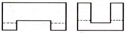
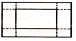
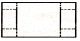
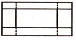
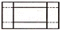
(정답률: 48%)
53. 나사의 표시가 'M42×3-6H' 로 되어 있을 때 이 나사에 대한 설명으로 틀린 것은?
- 암나사 등급이 6H이다.
- 호칭지름(바깥지름)은 42㎜이다.
- 피치는 3㎜이다.
- 왼 나사이다.
(정답률: 71%)
54. 그림과 같이 구조물의 부재 등에서 절단할 곳의 전후를 끊어서 90° 회전하여 그 사이에 단면 형상을 표시하는 단면도는?
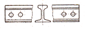
- 부분 단면도
- 한쪽 단면도
- 회전 도시 단면도
- 조합 단면도
(정답률: 78%)
55. 관 끝의 표시 방법 중 용접식 캡을 나타낸 것은?
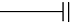
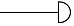
(정답률: 69%)
56. 호의 길이 치수를 가장 적합하게 나타낸 것은?
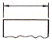
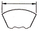
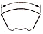
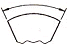
(정답률: 60%)
57. 도면에서 2종류 이상의 선이 같은 장소에서 중복될 경우 선의 우선순위를 옳게 나열한 것은?
- 외형선>숨은선>절단선>중심선>치수 보조선
- 외형선>중심선>절단선>치수 보조선>숨은선
- 외형선>절단선>치수 보조선>중심선>숨은선
- 외형선>치수 보조선>절단선>숨은선>중심선
(정답률: 73%)
58. 기계제도에서 도형의 생략에 관한 설명으로 틀린 것은?
- 도형이 대칭 형식인 경우에는 대칭 중심선의 한쪽 도형만을 그리고 그 대칭 중심선의 양 끝 부분에 대칭 그림 기호를 그려서 대칭임을 나타낸다.
- 대칭 중심선의 한쪽 도형을 대칭 중심선을 조금 넘는 부분까지 그려서 나타낼 수도 있으며, 이 때 중심선 양 끝에 대칭 그림 기호를 반드시 나타내야 한다.
- 같은 종류, 같은 모양의 것이 다수 줄지어 있는 경우에는 실형 대신 그림 기호를 피치선과 중심선과의 교점에 기입하여 나타낼 수 있다.
- 축, 막대, 관과 같은 동일 단면형의 부분은 지면을 생략하기 위하여 중간 부분을 파단선으로 잘라내서 그 긴요한 부분만을 가까이 하여 도시할 수 있다.
(정답률: 50%)
59. 그림과 같은 제3각법 정투상도에서 누락된 우측면도를 가장 적합하게 투상한 것은?
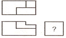
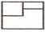
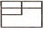
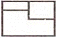
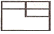
(정답률: 64%)
60. 다음 중 필릿 용접의 기호로 옳은 것은?
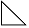
(정답률: 71%)